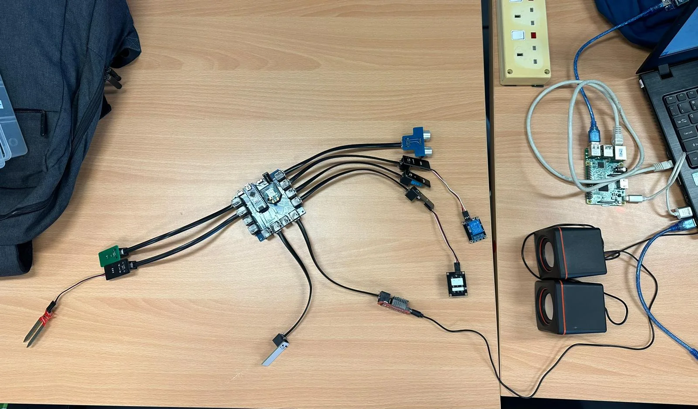
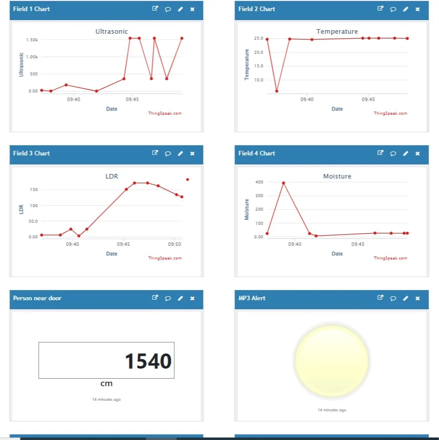
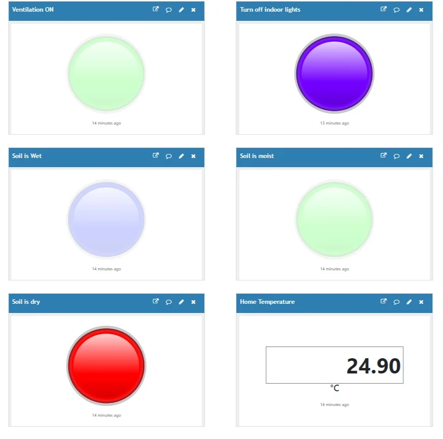

IoT System for Sustainable Household Living.
A school prototype for temperature control, lighting, soil moisture and doorway alerts.

Project overview
For our IoT Programming & Cloud Services mini project, we built a household monitoring prototype with four sensor functions. It covered ventilation, switching lights off when there was enough daylight, checking plant soil moisture and detecting someone near the doorway.
- An Arduino Nano read the sensors and controlled the relay, NeoPixel and MP3 outputs.
- A Raspberry Pi, ZigBee and Python were used to upload readings to ThingSpeak.
- The dashboard charts and widgets let us check the sensor values and see whether each response was working during our demonstration.
I wrote the code for the DHT11 and ventilation relay, as well as the ultrasonic sensor and MP3 alert. I also worked on combining the group’s code, uploading all four data fields and setting up the dashboard. Troubleshooting the MP3 playback and ThingSpeak upload was a substantial part of my work. This was a school prototype, not a system we installed and tested in a home.
The problem
Our group chose four household tasks to work on: ventilation, switching lights off in daylight, checking plant soil and detecting someone near the door.
The solution
We built an Arduino-based prototype with a sensor and response for each task. Readings were uploaded to ThingSpeak so we could inspect the charts and status indicators.
Follow a sensor reading.
Select a component to see its part in the project.
Household sensors
Four sensor functions cover room temperature, lighting, plant soil moisture and a doorway alert.
System functions and dashboard
- Temperature: a DHT11 reading of 29°C or above switches on the ventilation relay.
- Lighting: the light sensor switches the indoor lights off when there is enough daylight.
- Soil moisture: a NeoPixel shows red for dry soil, green for moist soil and blue for wet soil.
- Doorway alert: the ultrasonic sensor triggers an MP3 alert when someone stays within 150 cm for three seconds.
ThingSpeak showed the readings as charts and status indicators so we could check how the sensors were responding.

ThingSpeak dashboard
The four sensor readings on ThingSpeak.

Status indicators
Status indicators used to check the readings.
What I worked on
- Wrote the Arduino code for the DHT11 and ventilation relay.
- Wrote the ultrasonic sensor and MP3 alert code.
- Combined the group’s code so all four sensor functions could run together.
- Worked on the Python upload to ThingSpeak through MobaXterm and fixed the issue with uploading all four fields.
- Helped set up the dashboard widgets and demonstrated the working prototype.
I also troubleshot the MP3 alert and the three-second doorway check. The light-control and soil-moisture code came from my teammates.
Technologies
Outcome
We demonstrated the four sensor functions and checked their values on ThingSpeak. Fixing the MP3 alert involved checking the RX/TX connections and adjusting the code. The four-field upload needed further debugging and help from our lecturer.
This was a school prototype. It demonstrated the sensor responses, but did not measure household energy savings or prove that it could operate reliably in a home over time.